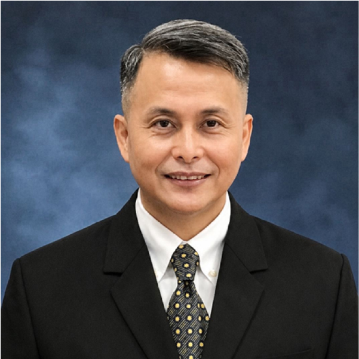

기조연설
거대도시 서울의 위기관리 현실과 전망
윤명오
명예교수
서울시립대 / 법무법인 태평양
세션1
기후위기 대응을 위한 재난관리 전략
좌장 | 송창영
교수
광주대학교
양병수
수석연구원
(재)한국재난안전기술원
KOGA Kiyotoshi
Director for Project Promotion
Planning and Coordination Division, Office of the Governor for Policy Planning, TMG
Chen, Tsung-Yueh
Commissioner
New Taipei City Fire Department

Atty. Crisanto C. Saruca Jr.
Director IV and Officer-in-Charge
Metropolitan Safety Office, Metropolitan Manila Development Authority
세션2
국제공조를 통한 재난대응 역량강화
좌장 | 양기근
교수
원광대학교
Joyce Huang
Senior Specialist
Taipei City Fire Department
임상규
재난정책연구팀장
국립재난안전연구원
세션3
데이터 기반 디지털 재난관리 체계
좌장 | 김응석
교수
선문대학교
유도근
부교수
수원대학교
HORII Yoichi
Digital Transformation Promotion Branch Chief
Tokyo Fire Department
SUGASE Yuki
Director for Crisis Management Coordination
Crisis Management Division, Bureau of General Affairs, TMG
Phairote Janjuea
Director of the Office of Disaster Prevention Strategy
Bangkok Fire and Rescue Department
세션4
도시별 대규모 재난관리 체계
좌장 | 함승희
교수
서울시립대
신상영
사무총장
(사)한국국민안전산업협회